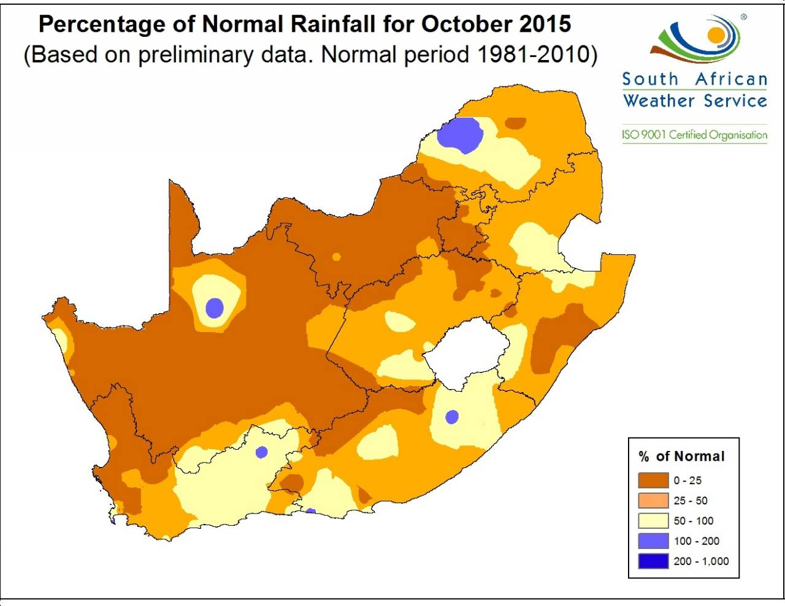
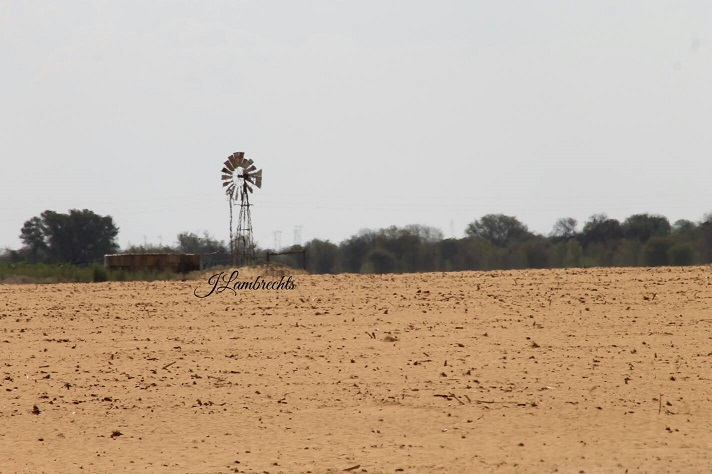

Hierdie groep is gestig deur boere wat sien dat daar 'n nood is onder boere as gevolg van die droogte! #droogteveldtog. Help gerus deur skenkings of bydrae van voer of vervoer aan boere in nood te help maak. Kom gesels saam en vertel van jou hulp of nood.
Totale skenkings tot op hede in Boere in Nood se bankrekening ontvang: R796 000.00
PayPal rekening: nc.schoombee@gmail.com or 072 3589734
For our English and Foreign friends who support us with there heart's and prayers, we thank you! We are putting donations together with the help of farmer's with big heart's and people from across South Africa with big heart's to! If you're new on this page please ask and we will assist you. You can help us by donating in the form of a money..We use this money to help pay for hay, alfalfa and to help cover transport costs. Thank you for your support!
Farmer's in need!
PayPal account can be use. nc.schoombee@gmail.com or 072 3589734
Hierdie groep word op gesonde etiese sakebeginsels bedryf en so hanteer Enslins van Bethlehem Boere in Nood se sake. http://www.enslins.co.za/index.php